# Install pacman if needed
if (!require("pacman")) install.packages("pacman")
# A better way to load (and install, if needed) multiple pagages
pacman::p_load(tidyverse, sf, geodata,
mregions2, leaflet, leaflet.extras2,
marmap, terra, tidyterra, sdmpredictors,
rnaturalearth, rnaturalearthdata,
ggspatial, CFtime, ncmeta,
stars,cubelyr)Data sources
Needed libraries:
Where I can get data for my maps?
There is a lot of free spatial data available on the web. For example see:
https://freegisdata.rtwilson.com/.
Remember, Google is your friend. And (for now), the AI is too.
Marine boundaries and administrative areas
mregions2 is a rOpenSci package that offers access to data from Marine Regions (https://marineregions.org/) in R, including:
The Marine Regions Gazetteer, a standardised list of marine place names with unique identifiers.
Maritime Boundaries: including EEZs, maritime boundaries, and more.
library (mregions2)
# An overview of data types available in the Gazetteer
gt <- gaz_types()
ns <- gaz_search("North Sea") # Search for entries matching "North Sea"
# Get the geometry for the North Sea (MRGID 2350)
north_sea <- gaz_search("North Sea") |>
filter(MRGID == 2350) |>
gaz_geometry() # Add the geometry
ggplot() +
geom_sf(data = north_sea, fill = "steelblue",
alpha = 0.4, colour = "navy") +
theme_bw() +
labs(title = "North Sea (IHO boundary)",
caption = "Source: Marine Regions Gazetteer via mregions2")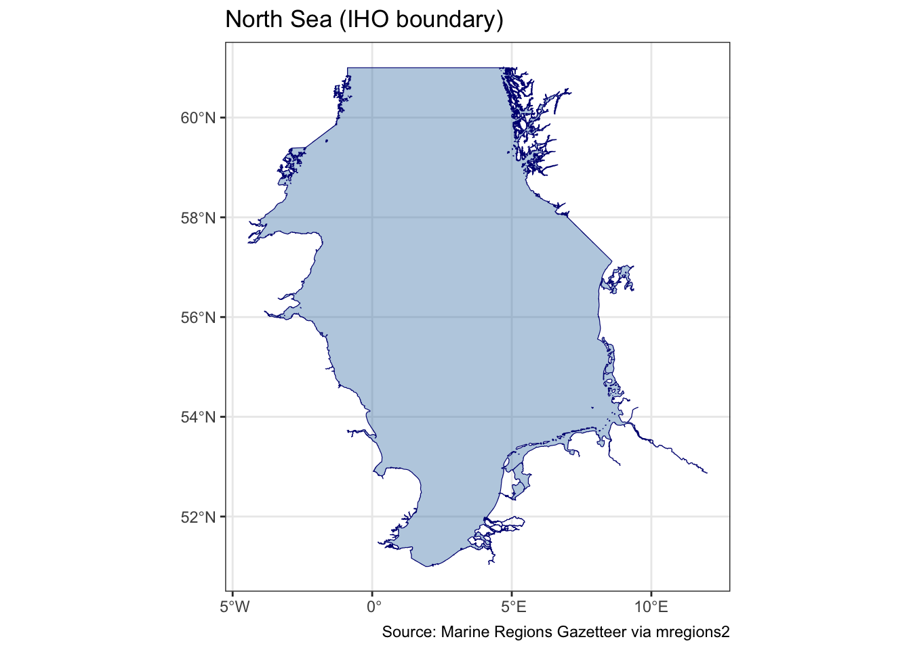
Now let’s access some of the Marine Regions data products. Probably the more useful are the EEZs.
# An overview of available Marine Regions data products
mrp_list# A tibble: 21 × 8
title namespace layer license citation doi imis abstract
<chr> <chr> <chr> <chr> <chr> <chr> <chr> <chr>
1 Exclusive Economic Zon… MarineRe… eez Creati… "Flande… http… http… "Versio…
2 Maritime Boundaries (v… MarineRe… eez_… Creati… "Flande… http… http… "Versio…
3 Territorial Seas (12 N… MarineRe… eez_… Creati… "Flande… http… http… "Versio…
4 Contiguous Zones (24 N… MarineRe… eez_… Creati… "Flande… http… http… "Versio…
5 Internal Waters (v3, w… MarineRe… eez_… Creati… "Flande… http… http… "Versio…
6 Archipelagic Waters (v… MarineRe… eez_… Creati… "Flande… http… http… "Versio…
7 High Seas (v1, world, … MarineRe… high… Creati… "Flande… http… http… "High S…
8 Extended Continental S… MarineRe… ecs Creati… "Flande… http… http… "This d…
9 Extended Continental S… MarineRe… ecs_… Creati… "Flande… http… http… "This d…
10 IHO Sea Areas (v3) MarineRe… iho Creati… "Flande… http… http… "World …
# ℹ 11 more rows# Download EEZ boundaries for Sweden only
# Filter using a CQL expression on the sovereign1 attribute
sweden_eez <- mrp_get("eez",
cql_filter = "sovereign1 = 'Sweden'")
ggplot() +
geom_sf(data = sweden_eez, fill = "darkorange", alpha = 0.3) +
theme_bw() +
labs(title = "Sweden EEZ")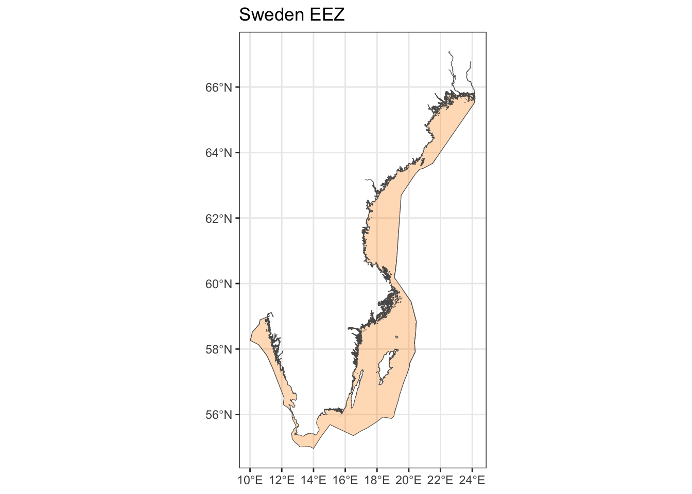
Here we will get the EEZ’s that are located within the Barent’s Sea:
# Find the Barents Sea in the Gazetteer
bs <- gaz_search("Barents Sea") |>
select(MRGID, placeType, preferredGazetteerName)
# MRGID 4247 is the IHO Sea Area entry for the Barents Sea
barents_poly <- gaz_search(4247) |>
gaz_geometry()
# Download all EEZs then clip to the Barents Sea polygon
all_eez <- mrp_get("eez",
cql_filter = "sovereign1 IN ('Norway', 'Russia')")
st_is_valid(all_eez) # Check for validity...[1] TRUE TRUE TRUE FALSE TRUE TRUEall_eez <- st_make_valid(all_eez) # ...and fix it
barents_eez <- st_intersection(all_eez, barents_poly)
ggplot() +
geom_sf(data = barents_eez,
aes(fill = geoname), alpha = 0.3) +
theme_bw() 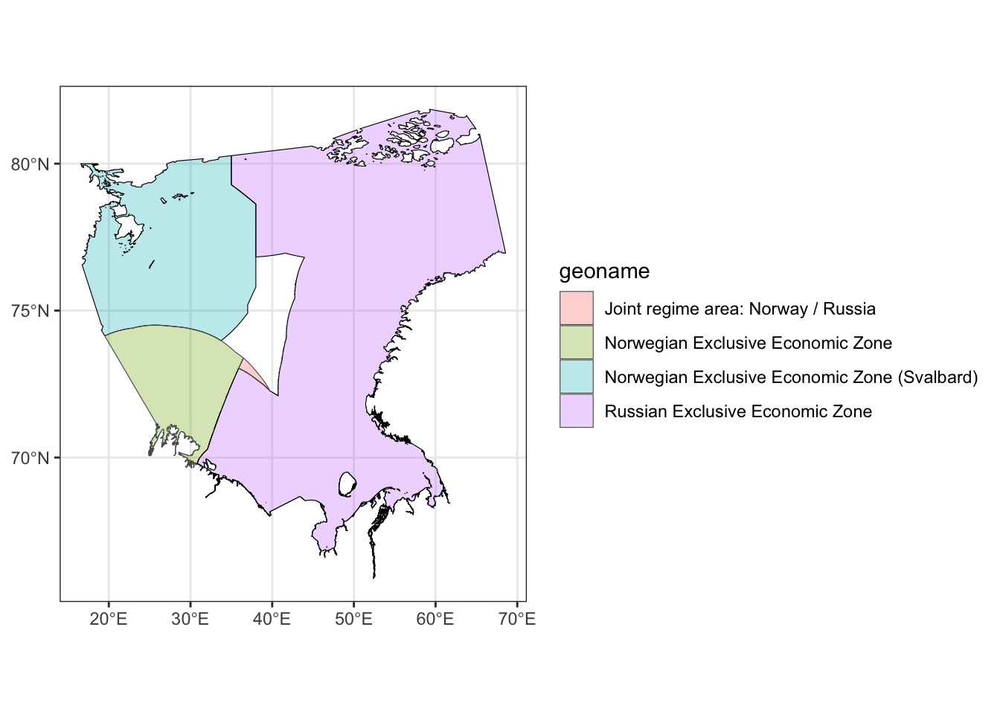
Some times we need to get the limits of EEZs as lines (rather than polygons):
sweden_bounds <- mrp_get("eez_boundaries",
cql_filter = "sovereign1 = 'Sweden' OR sovereign2 = 'Sweden'")
ggplot() +
geom_sf(data=sweden_bounds,
aes(color=line_name))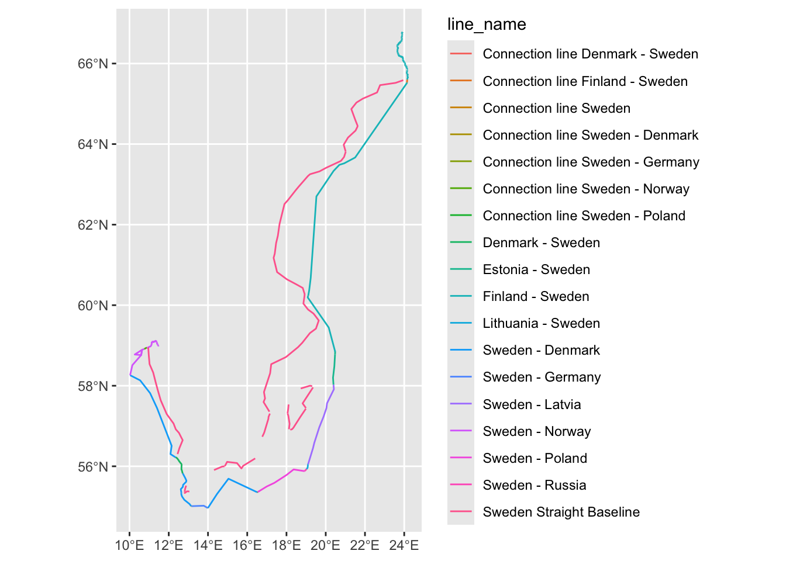
You can use the mrp_view function to explore the data products interactively.
mrp_view("eez")Administrative divisions
They can also be obtained from the GADM database using the geodata package.
We can use the name or the 3 letter ISO code of the country we want.
library(geodata)
spain<- gadm(country = "Spain", level = 1, path = "./data") %>%
st_as_sf() # Because by default we get an object of SpatVector class
ggplot() +
geom_sf(data=spain,aes(fill=NAME_1))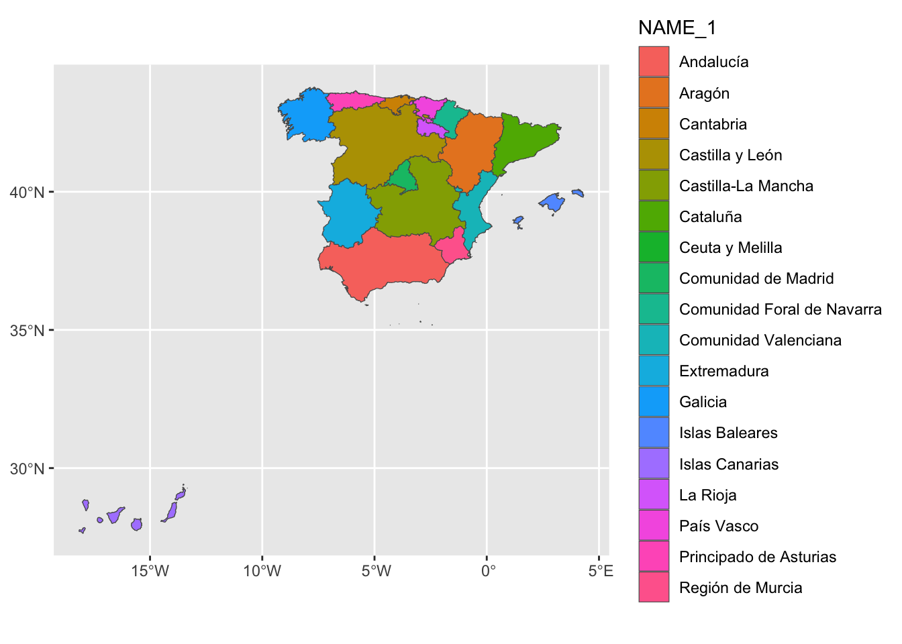
Natural Earth
A very good source for mapping data is Natural Earth http://www.naturalearthdata.com/. As we know already, it can be accessed directly from R using the rnaturalearth package.
The data available at three scales: large (lots of detail), intermediate, and small (few details). The package has pre-downloaded maps, and a function (ne_download) to download any of the datasets in the site.
# Map extent: Baltic Sea
xlim <- c(9, 32)
ylim <- c(53, 66)
# Raster: cross-blended hypsometric tints
# HYP_50M_SR_W = shaded relief + hypsometric tints + water colouring
# Returns a 3-band RGB SpatRaster
hypso <- ne_download(
scale = 50,
type = "HYP_50M_SR_W",
category = "raster"
)
# Crop to the Baltic region to reduce memory and speed up plotting
hypso_crop <- crop(hypso, ext(xlim[1], xlim[2], ylim[1], ylim[2]))
# Vector layers
europe <- ne_countries(continent = "Europe", scale = "large")
rivers <- ne_download(scale = "large",
type = "rivers_lake_centerlines",
category = "physical")
lakes <- ne_download(scale = "large", type = "lakes",
category = "physical")
# Plot
ggplot() +
# RGB hypsometric tint raster — no colour scale needed, it is already coloured
geom_spatraster_rgb(data = hypso_crop, maxcell = 5e6) +
# Country borders
geom_sf(data = europe, fill = NA, colour = "grey30", linewidth = 0.3) +
# Rivers
geom_sf(data = rivers, colour = "steelblue", linewidth = 0.4, alpha = 0.8) +
# Lakes
geom_sf(data = lakes, fill = "steelblue", colour = NA, alpha = 0.7) +
coord_sf(xlim = xlim, ylim = ylim, expand = FALSE) +
theme_bw() +
theme(legend.position = "none") +
labs(
title = "The Baltic Sea region",
x = NULL, y = NULL
)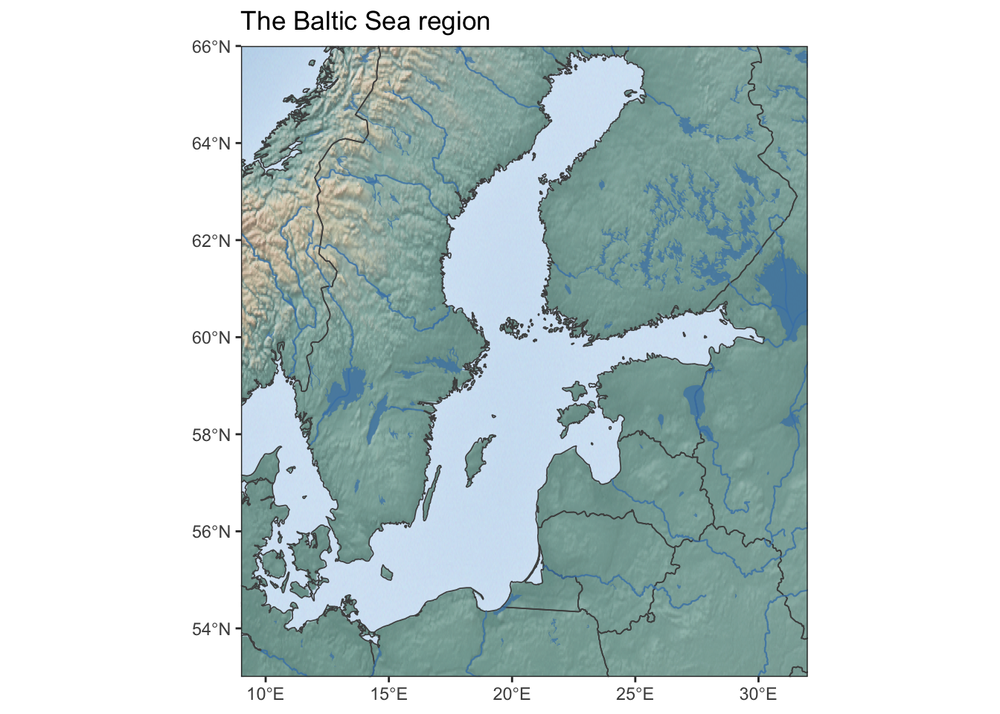
Bathymetry
We also have shown how to use the marmap package to access bathymetry data from the ETOPO1 Global Relief Model (https://www.ngdc.noaa.gov/mgg/global/).
xlim <- c(-5, 10)
ylim <- c(51, 62)
europe <- ne_countries(continent = "Europe", scale = "large")
bathy <- getNOAA.bathy(
lon1 = xlim[1], lon2 = xlim[2],
lat1 = ylim[1], lat2 = ylim[2],
resolution = 2, keep = TRUE, path = "./data") |>
marmap::as.raster() |> # returns a raster object
rast()
bathy[bathy>= 0] <- NA # keep only depths
# Clamp very deep locations
bathy <- clamp(bathy, lower = -1500, upper = 0, values = FALSE)
ggplot() +
geom_spatraster(data = bathy) +
scale_fill_distiller(
palette = "Blues",
direction = -1, # dark = deep, light = shallow
na.value = NA,
name = "Depth (m)",
limits = c(-1500, 0))+
geom_spatraster_contour(data = bathy,
breaks = c(-50,-100,-200, -500, -1000, -2000),
colour = "gray50", linewidth = 0.2, alpha = 0.5) +
geom_sf(data=europe, fill="gray90", color="gray90") +
coord_sf(xlim = xlim, ylim = ylim, expand = FALSE) +
theme_bw() +
theme(legend.position = "right") +
labs(title = "North Sea",
x = NULL, y = NULL)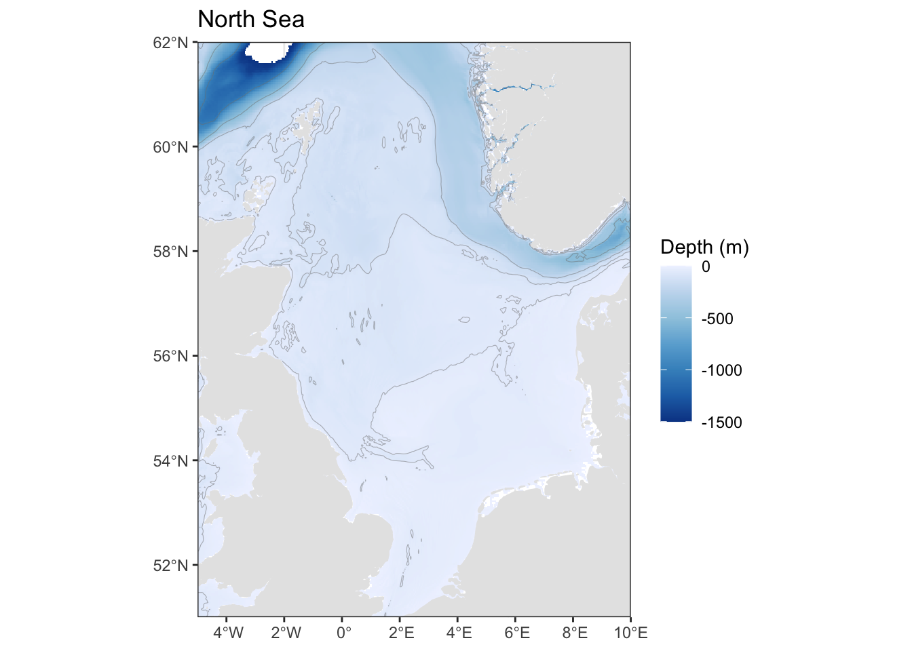
marmapalso can read files from the GEBCO bathymetry database (but you have to download them manually) from https://www.gebco.net/. If you do this, select the GeoTiff option so you can read them directly into a raster object with terra.
ggoceanmapsis another package that can be used to download and plot bathymetry data.
sdmpredictors
The package sdmpredictors provides access to two environmental datasets:
Bio-Oracle (https://www.bio-oracle.org/), a set of rasters with geophysical, biotic and environmental data on the surface and the seabed. Includes many parameters: temperature, chlorophyll concentration, dissolved oxygen, etc.
MARSPEC (https://marspec.org/) is a set of climatic and geophyisical layers focusing on pelagic and shallow waters.
layers <- list_layers(datasets = "Bio-ORACLE", marine = TRUE)
# Near-bottom layers have "_bd" in the layer code
bottom_layers <- layers |>
filter(str_detect(layer_code, "_bd")) |>
select(layer_code, name, units, description)
# Set a persistent directory for dowloading
options(sdmpredictors_datadir = "./data/sdmpredictors")
env_bottom <- load_layers(
layercodes = c(
"BO2_tempmean_bdmean", # mean near-bottom temperature (°C)
"BO2_salinitymean_bdmean", # mean near-bottom salinity (PSS)
"BO2_dissoxmean_bdmean" # mean near-bottom dissolved oxygen (ml/l)
),
equalarea = FALSE) |> # keep WGS84 geographic CRS
rast()
# Rename layers for clarity
names(env_bottom) <- c("Temperature",
"Salinity",
"Dissolved oxygen")
xlim <- c(-5, 30)
ylim <- c(48, 65)
env_bottom_crop <- crop(env_bottom, ext(xlim[1], xlim[2], ylim[1], ylim[2]))
p1 <- ggplot() +
geom_spatraster(data = env_bottom_crop[[1]]) +
scale_fill_viridis_c(option = "viridis", na.value = NA, name = NULL) +
coord_sf(xlim = xlim, ylim = ylim, expand = FALSE) +
theme_void() +
theme(legend.position = "bottom")+
labs(title="Temperature (°C)")
p2 <- ggplot() +
geom_spatraster(data = env_bottom_crop[[2]]) +
scale_fill_viridis_c(option = "viridis", na.value = NA, name = NULL) +
coord_sf(xlim = xlim, ylim = ylim, expand = FALSE) +
theme_void() +
theme(legend.position = "bottom") +
labs(title="Salinity (PPS)")
p3 <- ggplot() +
geom_spatraster(data = env_bottom_crop[[3]]) +
scale_fill_viridis_c(option = "viridis", na.value = NA, name = NULL) +
coord_sf(xlim = xlim, ylim = ylim, expand = FALSE) +
theme_void() +
theme(legend.position = "bottom") +
labs(title="Dissolved oxygen (ml/l)")
library(patchwork)
p1+p2+p3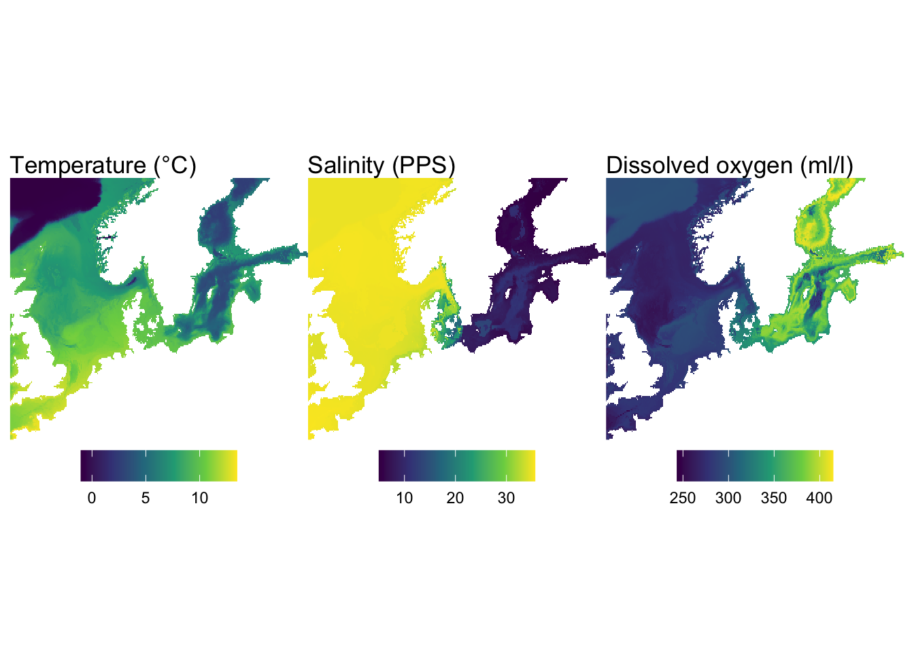
Copernicus Marine … and showing off the star package
To download data from Copernicus Marine, you can use the CopernicusMarine package. You can install it like this:
install.packages("CopernicusMarine",
repos = c("https://pepijn-devries.r-universe.dev",
"https://cloud.r-project.org"))You will need to create an account in Copernicus Marine before you can get data. You can put them in the .Renviron file, like this:
COPERNICUS_USER=your_username COPERNICUS_PWD=your_password
And put this in your .Rprofile file:
options( CopernicusMarine_uid = Sys.getenv(“COPERNICUS_USER”), CopernicusMarine_pwd = Sys.getenv(“COPERNICUS_PWD”) )
So the username and passwords get loaded every time you start R.
You can also put them in your code directly using options, but you will have to do this in every R session:
options(
CopernicusMarine_uid = "your_username",
CopernicusMarine_pwd = "your_password"
)With this, we can download some data. Let’s get sea surface temperature from the Global Phisics Analysis and Forecast. First some exploration to select which data to dowload.
library(CopernicusMarine)
# List all products matching a search term
products <- cms_products_list(contain = "GLOBAL_ANALYSISFORECAST_PHY")
layers <- cms_product_services("GLOBAL_ANALYSISFORECAST_PHY_001_024")
# Get names of variables in the product
details <- cms_product_details("GLOBAL_ANALYSISFORECAST_PHY_001_024")
variables <- details$properties$allVariables |>
unlist()
cms_cite_product("GLOBAL_ANALYSISFORECAST_PHY_001_024")$doi[1] "E.U. Copernicus Marine Service Information; Global Ocean Physics Analysis and Forecast - GLOBAL_ANALYSISFORECAST_PHY_001_024 (2016-10-14). DOI:10.48670/moi-00016"dt <- cms_product_details("GLOBAL_ANALYSISFORECAST_PHY_001_024")
dt <- dt$properties
region <- c(-5, 51, 10, 62) # xmin, ymin, xmax, ymax# Download surface temperature between 0 and 20m
sst <- cms_download_subset(
product = "GLOBAL_ANALYSISFORECAST_PHY_001_024",
layer = "cmems_mod_glo_phy-thetao_anfc_0.083deg_P1D-m",
variable = "thetao",
region = c(-5, 51, 10, 62), # xmin, ymin, xmax, ymax
timerange = c("2024-08-01", "2024-08-31"),
verticalrange = c(0, -20) # surface layer
)
write_rds(sst, "./data/north_sea_sst_aug2024.rds")Now we can download the data with the cms_download_subset function. Note that the data is dowloaded as a stars object.
sst <- read_rds("./data/north_sea_sst_aug2024.rds")
# Check how many depth levels were returned
st_get_dimension_values(sst, "elevation")Units: [m]
[1] -21.598820 -18.495560 -15.810070 -13.467140 -11.405000 -9.572997
[7] -7.929560 -6.440614 -5.078224 -3.819495 -2.645669 -1.541375
[13] -0.494025# --- Inspect the time dimension
st_get_dimension_values(sst, "time") [1] "2024-08-01" "2024-08-02" "2024-08-03" "2024-08-04" "2024-08-05"
[6] "2024-08-06" "2024-08-07" "2024-08-08" "2024-08-09" "2024-08-10"
[11] "2024-08-11" "2024-08-12" "2024-08-13" "2024-08-14" "2024-08-15"
[16] "2024-08-16" "2024-08-17" "2024-08-18" "2024-08-19" "2024-08-20"
[21] "2024-08-21" "2024-08-22" "2024-08-23" "2024-08-24" "2024-08-25"
[26] "2024-08-26" "2024-08-27" "2024-08-28" "2024-08-29" "2024-08-30"
[31] "2024-08-31"# Mean over time only — keeps spatial + elevation dimensions
sst_mean <- st_apply(sst, c("longitude", "latitude", "elevation"),
mean, na.rm = TRUE)
# Extract surface and deepest level
n_elev <- dim(sst_mean)["elevation"]
sst_mean_surface <- dplyr::slice(sst_mean, along = "elevation", index = 1)
sst_mean_deep <- dplyr::slice(sst_mean, along = "elevation", index = n_elev)
p1 <- ggplot() +
geom_stars(data = sst_mean_surface) +
scale_fill_viridis_c(option = "inferno", name = "SST (°C)",
na.value = NA, limits = c(10, 23)) +
coord_sf() +
theme_void() +
labs(title = "Surface (~0.5 m)")
p2 <- ggplot() +
geom_stars(data = sst_mean_deep) +
scale_fill_viridis_c(option = "inferno", name = "SST (°C)",
na.value = NA, limits = c(10, 23)) +
coord_sf() +
theme_void() +
labs(title = "Surface (~50 m)")
p1 + p2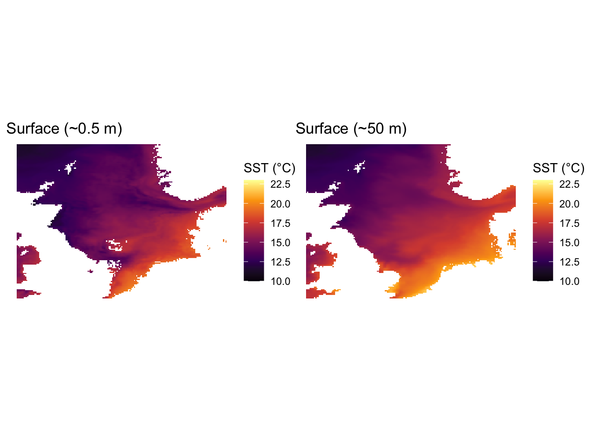
# --- Extract a single day
sst_day1 <- filter(sst, time == as.Date("2024-08-01"))
# stars objects can be subsetted as [attribute, x, y, elevation, time]
sst_day1 <- sst[,,,, 1] # all x, y, elevation, first time step
# Plot a single day
ggplot() +
geom_stars(data = sst_day1) +
scale_fill_viridis_c(option = "inferno", name = "SST (°C)", na.value = NA) +
coord_sf() +
theme_void() +
labs(title = "North Sea SST — 1 August 2024",
caption = "Source: E.U. Copernicus Marine Service")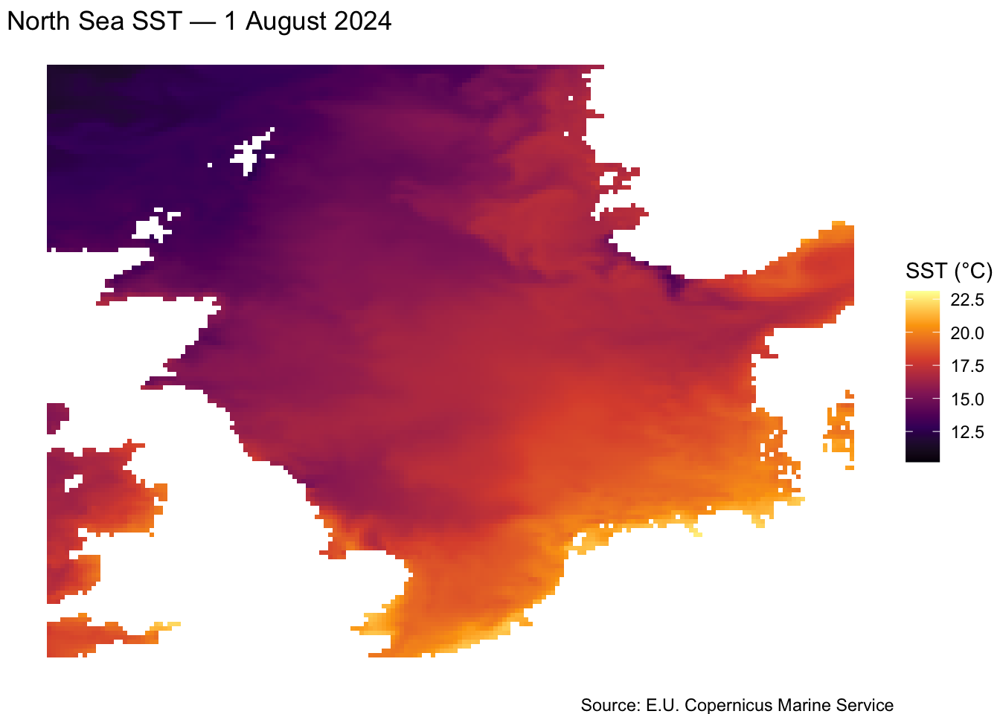
# Convert the monthly mean to terra SpatRaster if preferred
#sst_rast <- rast(sst_mean)On a tangent… curvilinear grids with stars!
prec_file <- system.file("nc/test_stageiv_xyt.nc", package = "stars")
# curvilinear = c("lon", "lat") tells stars which variables in the file
# hold the 2D coordinate arrays — each cell has its own lon/lat pair
prec <- read_ncdf(prec_file,
curvilinear = c("lon", "lat"),
ignore_bounds = TRUE)
# Take the first time step
prec_t1 <- dplyr::slice(prec, along = "time", index = 1)
# Plot
ggplot() +
geom_stars(data = prec_t1) +
scale_fill_viridis_c(option = "mako", direction = -1,
na.value = NA, name = "Precip\n(kg/m²)",
trans = "sqrt") +
coord_sf() +
theme_void() +
labs(title = "Hourly precipitation — curvilinear grid",
caption = "Source: stars built-in example data")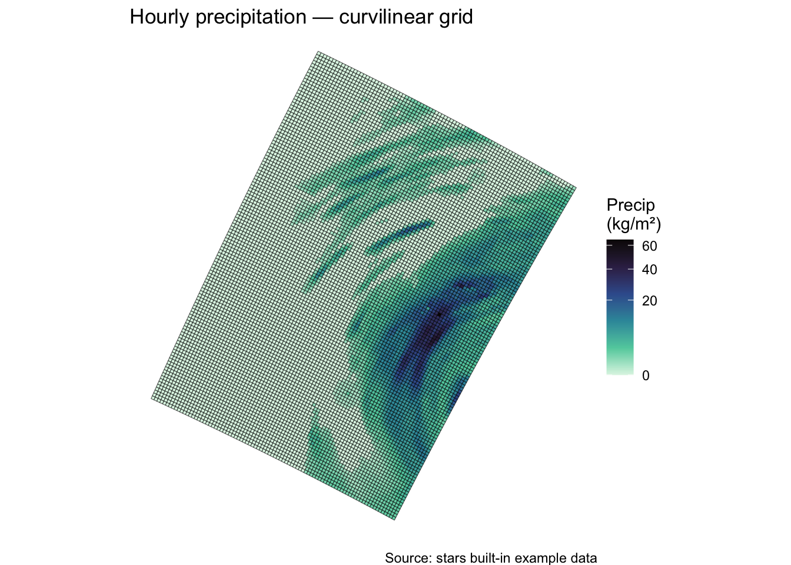
EMODNET
https://emodnet.github.io/emodnet.wfs/index.html
# Install if needed
pak::pak("EMODnet/emodnet.wfs") # Modern way to install packages from GitHub
library(emodnet.wfs)
# Suppress the "WFS client created" messages
options("emodnet.wfs.quiet" = TRUE)
# Step 1: see what services are available
services <- emodnet_wfs() |>
select(emodnet_thematic_lot, service_name)
# Step 2: initialise a client for human activities
wfs <- emodnet_init_wfs_client(service = "human_activities")
# Step 3: list available layers...
layers_info <- emodnet_get_wfs_info(wfs)
# ...and search for wind-related layers in the list
layers_info |>
filter(str_detect(layer_name, "wind")) |>
select(layer_name, title)# A tibble: 2 × 2
# Rowwise:
layer_name title
<chr> <chr>
1 windfarms Wind Farms (Points)
2 windfarmspoly Wind Farms (Polygons)# Step 4: download a layer — offshore wind farms
wind_farms <- emodnet_get_layers(
wfs = wfs,
layers = "windfarms" # or whatever the correct name is
)
wind_sf <- wind_farms$windfarms
# Step 5: crop to the North Sea and plot --------------------------------
xlim <- c(-5, 10)
ylim <- c(51, 58)
wind_ns <- wind_sf |>
st_crop(xmin = xlim[1], xmax = xlim[2],
ymin = ylim[1], ymax = ylim[2])
ggplot() +
geom_sf(data=wind_ns, aes(color = status), alpha = 0.7) +
geom_sf(data=europe, fill="gray70")+
scale_fill_brewer(palette = "Set2", name = "Status") +
coord_sf(xlim = xlim, ylim = ylim, expand = FALSE) +
theme_void() +
theme(legend.position = "bottom") +
labs(
title = "Offshore wind farms — North Sea",
caption = "Source: EMODnet Human Activities via emodnet.wfs"
)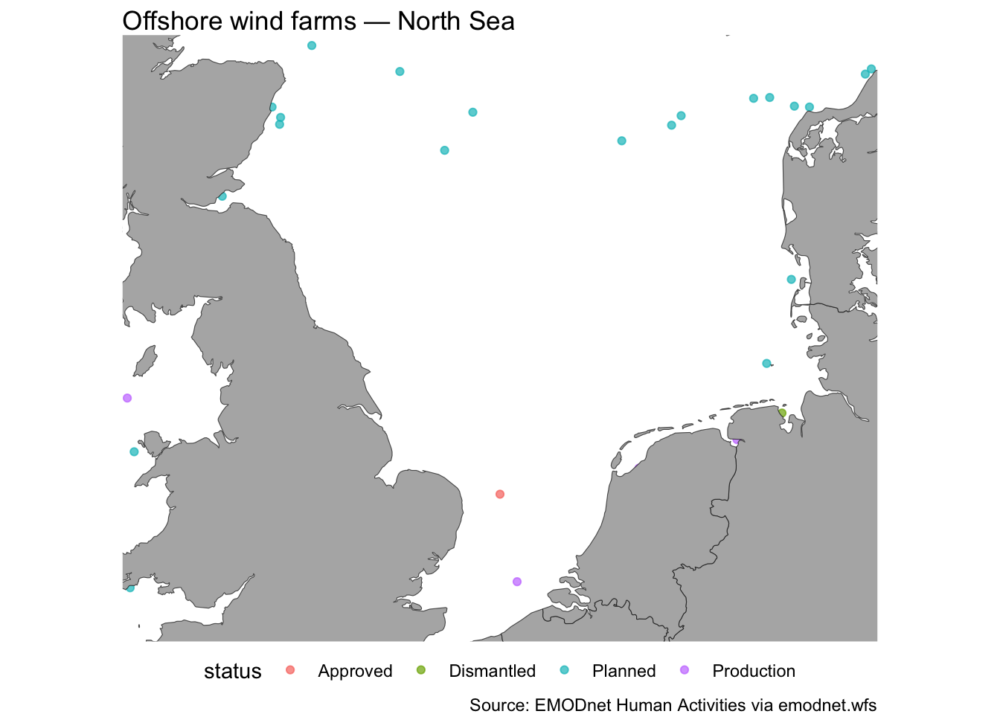